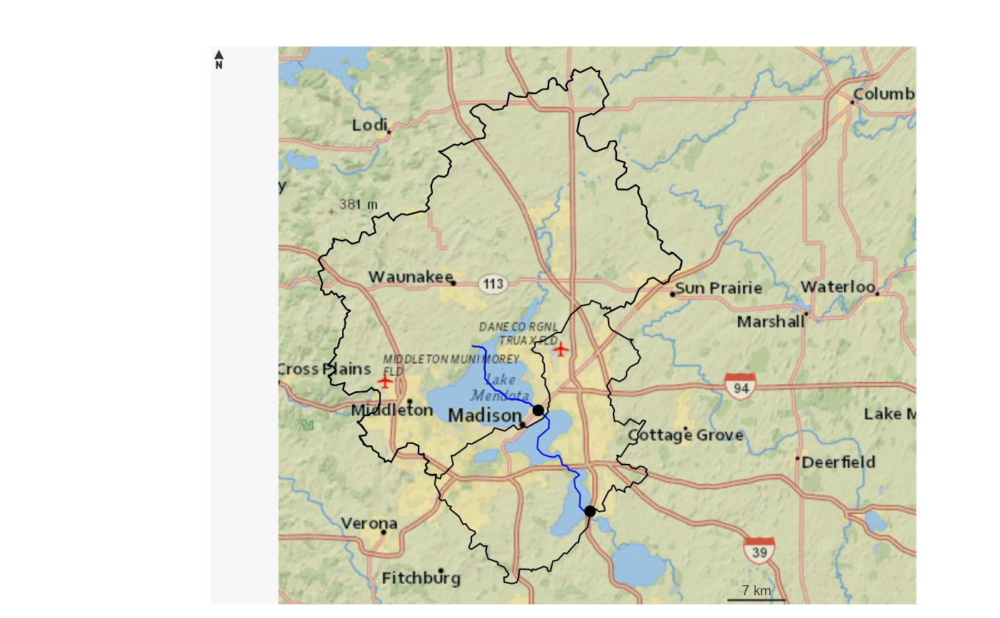
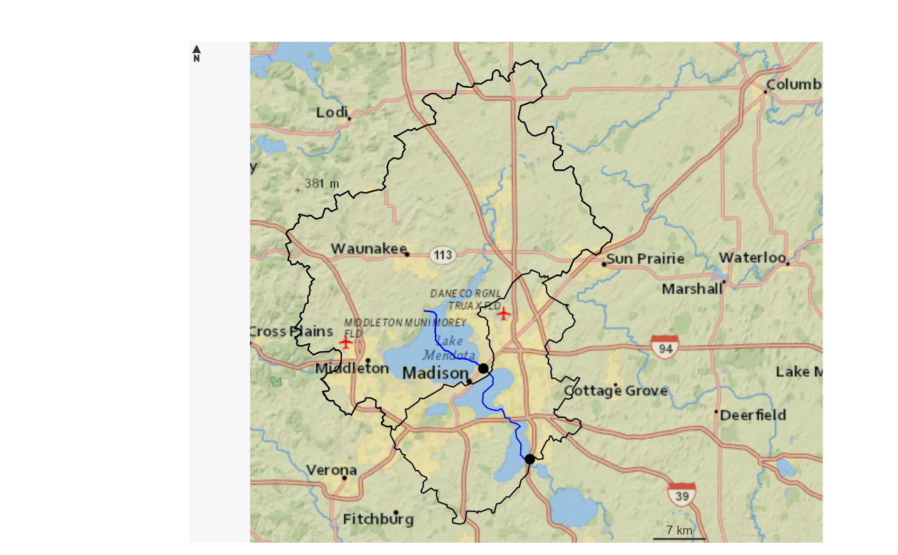
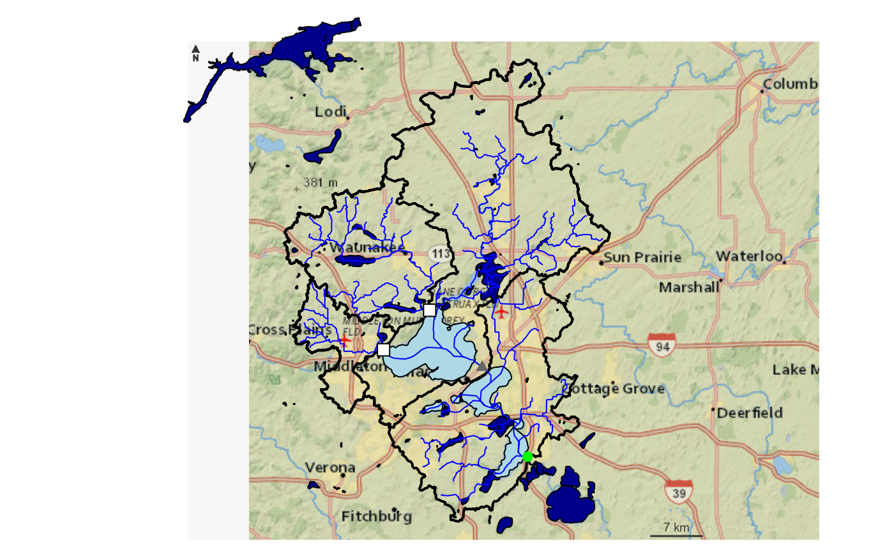
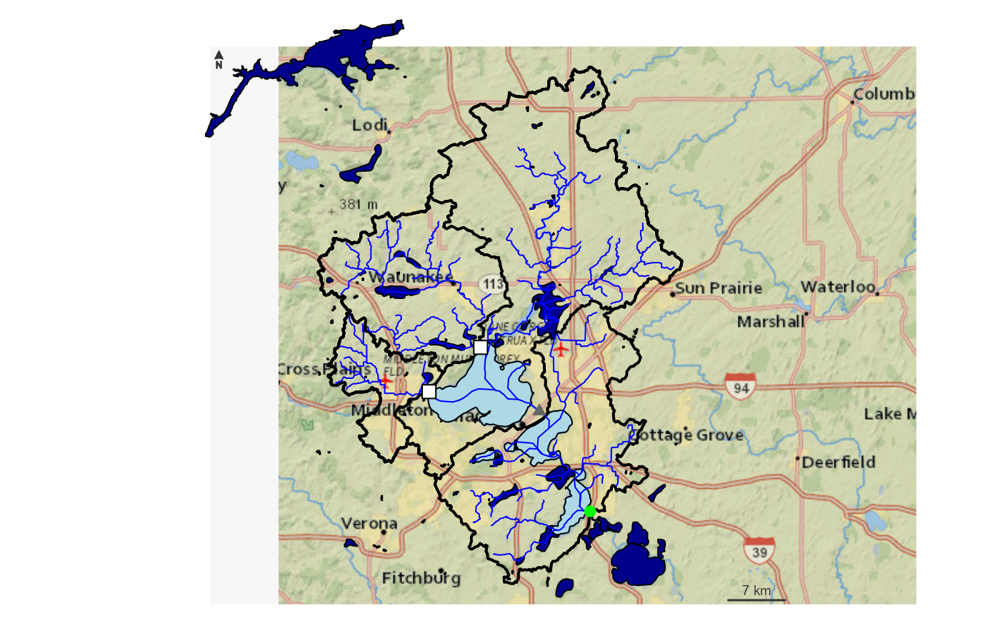
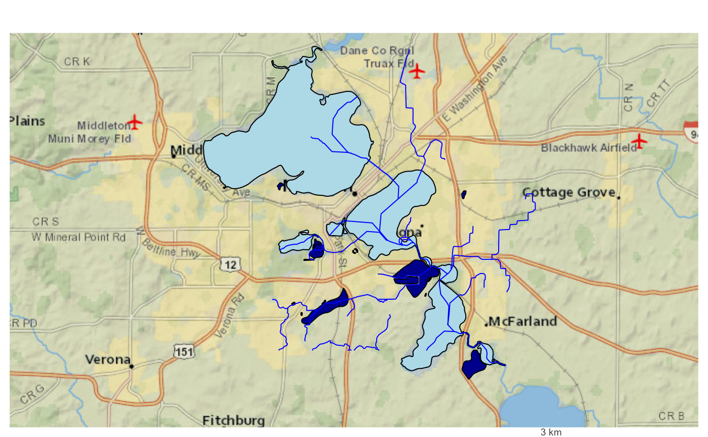
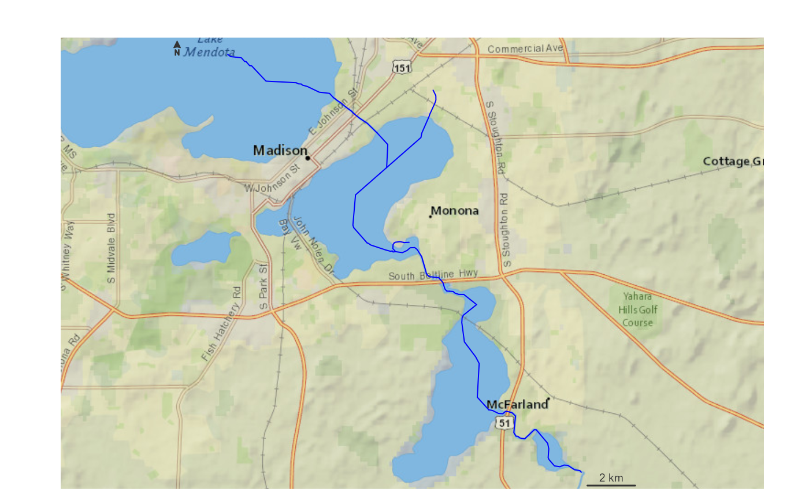
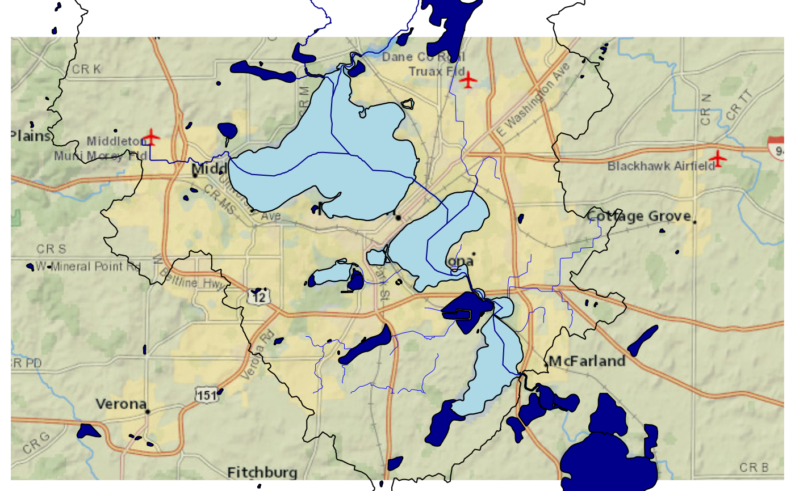
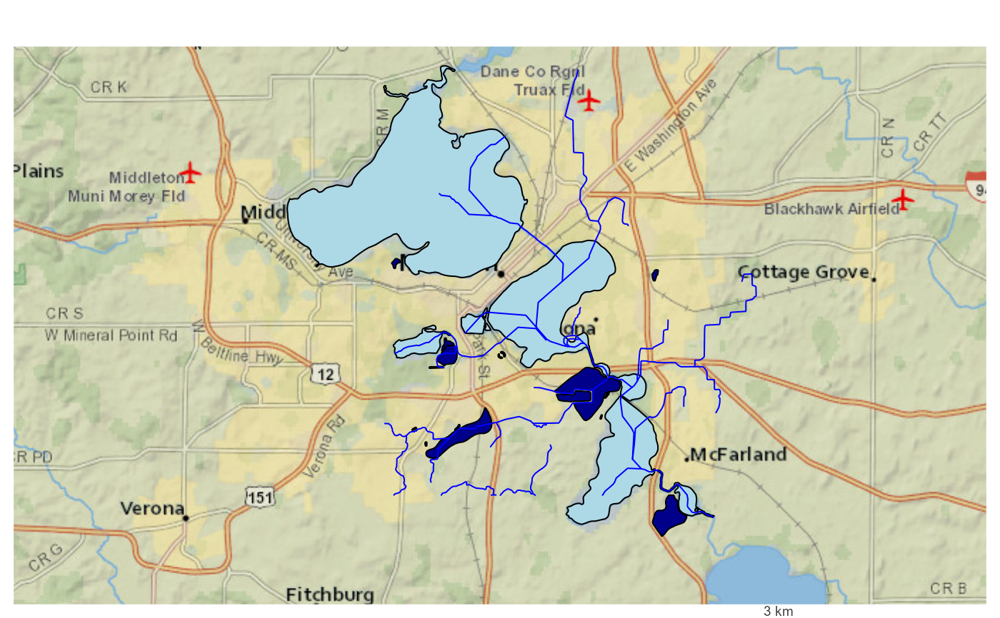
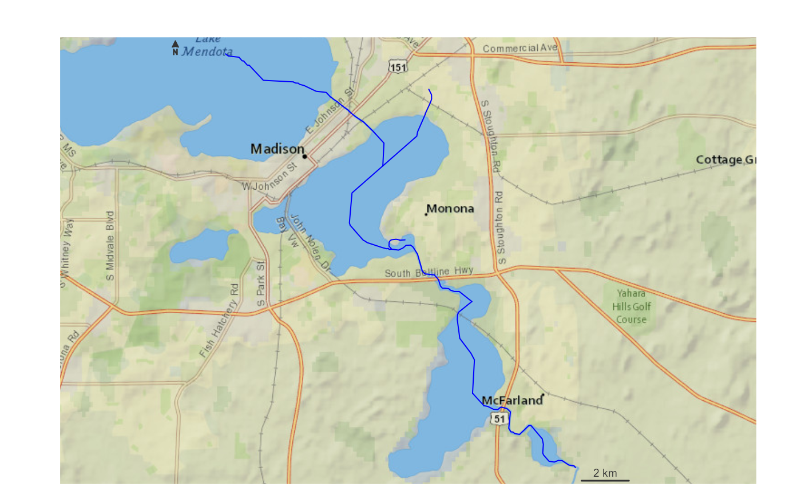
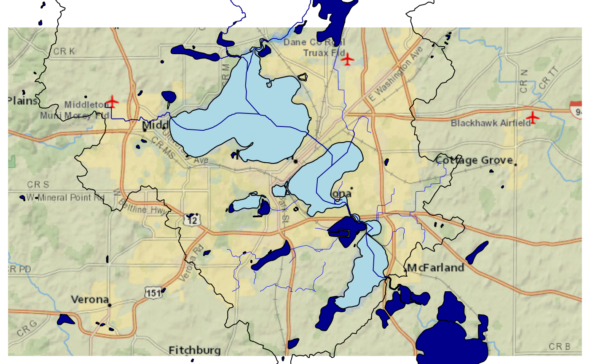

Given a list of outlets, get their basin boundaries and network and return a plot in EPSG:3857 Web Mercator Projection.
plot_nhdplus(
outlets = NULL,
bbox = NULL,
streamorder = NULL,
nhdplus_data = NULL,
gpkg = NULL,
plot_config = NULL,
basemap = "Esri.NatGeoWorldMap",
zoom = NULL,
add = FALSE,
actually_plot = TRUE,
overwrite = TRUE,
flowline_only = NULL,
cache_data = NULL
)Arguments
- outlets
list of nldi outlets. Other inputs are coerced into nldi outlets, see details.
- bbox
object of class bbox with a defined crs. See examples.
- streamorder
integer only streams of order greater than or equal will be returned
- nhdplus_data
geopackage containing source nhdplus data (omit to download)
- gpkg
path and file with .gpkg ending. If omitted, no file is written.
- plot_config
list containing plot configuration, see details.
- basemap
character indicating which basemap type to use. Chose from: get_tiles.
- zoom
integer passed on to get_tiles. This value will override the default set by the package.
- add
boolean should this plot be added to an already built map.
- actually_plot
boolean actually draw the plot? Use to get data subset only.
- overwrite
passed on the subset_nhdplus.
- flowline_only
boolean only subset and plot flowlines only, default=FALSE
- cache_data
character path to rds file where all plot data can be cached. If file doesn't exist, it will be created. If set to FALSE, all caching will be turned off -- this includes basemap tiles.
Value
data.frame plot data is returned invisibly in NAD83 Lat/Lon.
Details
plot_nhdplus supports several input specifications. An unexported function "as_outlet" is used to convert the outlet formats as described below.
if outlets is omitted, the bbox input is required and all nhdplus data in the bounding box is plotted.
If outlets is a list of integers, it is assumed to be NHDPlus IDs (comids) and all upstream tributaries are plotted.
if outlets is an integer vector, it is assumed to be all NHDPlus IDs (comids) that should be plotted. Allows custom filtering.
If outlets is a character vector, it is assumed to be NWIS site ids.
if outlets is a list containing only characters, it is assumed to be a list of nldi features and all upstream tributaries are plotted.
if outlets is a data.frame with point geometry, a point in polygon match is performed and upstream with tributaries from the identified catchments is plotted.
The plot_config parameter is a list with names "basin", "flowline", "outlets",
"network_wtbd", and "off_network_wtbd".
The following shows the defaults that can be altered.
basin
list(lwd = 1, col = NA, border = "black")flowline
list(lwd = 1, col = "blue")outlets
network_wtbd
list(lwd = 1, col = "lightblue", border = "black")off_network_wtbd
list(lwd = 1, col = "darkblue", border = "black")
If adding additional layers to the plot, data must be projected to EPSG:3857 with `sf::st_transform(x, 3857)` prior to adding to the plot.
Examples
# \donttest{
options("rgdal_show_exportToProj4_warnings"="none")
# Beware plot_nhdplus caches data to the default location.
# If you do not want data in "user space" change the default.
old_dir <- nhdplusTools::nhdplusTools_data_dir()
nhdplusTools_data_dir(tempdir())
plot_nhdplus("05428500")
#> Zoom set to: 11
 plot_nhdplus("05428500", streamorder = 2)
#> Zoom set to: 11
plot_nhdplus("05428500", streamorder = 2)
#> Zoom set to: 11
 plot_nhdplus(list(13293970, 13293750))
#> Zoom set to: 10

source(system.file("extdata/sample_data.R", package = "nhdplusTools"))
plot_nhdplus(list(13293970, 13293750), streamorder = 3, nhdplus_data = sample_data)
#> Zoom set to: 10
plot_nhdplus(list(13293970, 13293750))
#> Zoom set to: 10

source(system.file("extdata/sample_data.R", package = "nhdplusTools"))
plot_nhdplus(list(13293970, 13293750), streamorder = 3, nhdplus_data = sample_data)
#> Zoom set to: 10
 plot_nhdplus(list(list("comid", "13293970"),
list("nwissite", "USGS-05428500"),
list("huc12pp", "070900020603"),
list("huc12pp", "070900020602")),
streamorder = 2,
nhdplus_data = sample_data)
#> Error in: https://labs.waterdata.usgs.gov/api/nldi/linked-data/huc12pp_102020/070900020603/
#> Error in: https://labs.waterdata.usgs.gov/api/nldi/linked-data/huc12pp_102020/070900020602/
#> Zoom set to: 10
plot_nhdplus(list(list("comid", "13293970"),
list("nwissite", "USGS-05428500"),
list("huc12pp", "070900020603"),
list("huc12pp", "070900020602")),
streamorder = 2,
nhdplus_data = sample_data)
#> Error in: https://labs.waterdata.usgs.gov/api/nldi/linked-data/huc12pp_102020/070900020603/
#> Error in: https://labs.waterdata.usgs.gov/api/nldi/linked-data/huc12pp_102020/070900020602/
#> Zoom set to: 10
 plot_nhdplus(sf::st_as_sf(data.frame(x = -89.36083,
y = 43.08944),
coords = c("x", "y"), crs = 4326),
streamorder = 2,
nhdplus_data = sample_data)
#> Zoom set to: 11
plot_nhdplus(sf::st_as_sf(data.frame(x = -89.36083,
y = 43.08944),
coords = c("x", "y"), crs = 4326),
streamorder = 2,
nhdplus_data = sample_data)
#> Zoom set to: 11
 plot_nhdplus(list(list("comid", "13293970"),
list("nwissite", "USGS-05428500"),
list("huc12pp", "070900020603"),
list("huc12pp", "070900020602")),
streamorder = 2,
nhdplus_data = sample_data,
plot_config = list(basin = list(lwd = 2),
outlets = list(huc12pp = list(cex = 1.5),
comid = list(col = "green"))))
#> Error in: https://labs.waterdata.usgs.gov/api/nldi/linked-data/huc12pp_102020/070900020603/
#> Error in: https://labs.waterdata.usgs.gov/api/nldi/linked-data/huc12pp_102020/070900020602/
#> Zoom set to: 10

bbox <- sf::st_bbox(c(xmin = -89.43, ymin = 43, xmax = -89.28, ymax = 43.1),
crs = "+proj=longlat +datum=WGS84 +no_defs")
fline <- sf::read_sf(sample_data, "NHDFlowline_Network")
comids <- nhdplusTools::get_UT(fline, 13293970)
plot_nhdplus(comids)
#> Spherical geometry (s2) switched off
#> Spherical geometry (s2) switched on
#> Zoom set to: 11
plot_nhdplus(list(list("comid", "13293970"),
list("nwissite", "USGS-05428500"),
list("huc12pp", "070900020603"),
list("huc12pp", "070900020602")),
streamorder = 2,
nhdplus_data = sample_data,
plot_config = list(basin = list(lwd = 2),
outlets = list(huc12pp = list(cex = 1.5),
comid = list(col = "green"))))
#> Error in: https://labs.waterdata.usgs.gov/api/nldi/linked-data/huc12pp_102020/070900020603/
#> Error in: https://labs.waterdata.usgs.gov/api/nldi/linked-data/huc12pp_102020/070900020602/
#> Zoom set to: 10

bbox <- sf::st_bbox(c(xmin = -89.43, ymin = 43, xmax = -89.28, ymax = 43.1),
crs = "+proj=longlat +datum=WGS84 +no_defs")
fline <- sf::read_sf(sample_data, "NHDFlowline_Network")
comids <- nhdplusTools::get_UT(fline, 13293970)
plot_nhdplus(comids)
#> Spherical geometry (s2) switched off
#> Spherical geometry (s2) switched on
#> Zoom set to: 11
 #' # With Local Data
plot_nhdplus(bbox = bbox, nhdplus_data = sample_data)
#> Zoom set to: 11

# With downloaded data
plot_nhdplus(bbox = bbox, streamorder = 3)
#> Spherical geometry (s2) switched off
#> although coordinates are longitude/latitude, st_intersects assumes that they
#> are planar
#> Spherical geometry (s2) switched on
#> Zoom set to: 12

# Can also plot on top of the previous!
plot_nhdplus(bbox = bbox, nhdplus_data = sample_data,
plot_config = list(flowline = list(lwd = 0.5)))
#> Zoom set to: 11
plot_nhdplus(comids, nhdplus_data = sample_data, streamorder = 3, add = TRUE,
plot_config = list(flowline = list(col = "darkblue")))

nhdplusTools::nhdplusTools_data_dir(old_dir)
# }
#' # With Local Data
plot_nhdplus(bbox = bbox, nhdplus_data = sample_data)
#> Zoom set to: 11

# With downloaded data
plot_nhdplus(bbox = bbox, streamorder = 3)
#> Spherical geometry (s2) switched off
#> although coordinates are longitude/latitude, st_intersects assumes that they
#> are planar
#> Spherical geometry (s2) switched on
#> Zoom set to: 12

# Can also plot on top of the previous!
plot_nhdplus(bbox = bbox, nhdplus_data = sample_data,
plot_config = list(flowline = list(lwd = 0.5)))
#> Zoom set to: 11
plot_nhdplus(comids, nhdplus_data = sample_data, streamorder = 3, add = TRUE,
plot_config = list(flowline = list(col = "darkblue")))

nhdplusTools::nhdplusTools_data_dir(old_dir)
# }